Chapter 2 Statistical Modeling and Designed Experiments
We begin our dive into Statistical Modeling by building from some introductory statistics material, namely two-sample inference. After introducing some crucial concepts, we expand two-sample inference into analysis of variance. The learning objective of this unit include:
- Distinguishing between observational studies and designed experiments.
- Understanding the basic structure of statistical model.
- Understanding that statistical inference can be formulated as the comparison of models.
- Performing a full analysis involving a one-factor experiment.
2.1 Observational Studies versus designed experiments
Before introducing some details on statistical models we need to step back and discuss the source of our data. Are the data a “sample of convenience”, or were they obtained via a designed experiment, or some random sampling scheme, or by some sort of survey? How the data were collected has a crucial impact on what conclusions can be meaningfully made.
It is important to recognize that there are two primary methods for obtaining data for analysis: designed experiments and observational studies. There is a third type of data collected through survey sampling methods that incorporates elements from both designed experiments and observational studies, but are excluded here. It is crucial to know the distinction between each type of data, as this results in a different approach to interpreting estimated models.
2.1.1 Observational Studies
In many situations a practitioner (perhaps you, or a client) simply collect measurements on predictor and response variables as they naturally occur, without intervention from the data collector. Such data is called observational data.
Interpreting models built on observational data can be more challenging. There are many opportunities for error and any conclusions will carry with them substantial unquantifiable uncertainty. Nevertheless, there are many important questions for which only observational data will be available. For example, how else can we study something like differences in prevalence of obesity, diabetes and other cardiovascular risk factors between different ethnic groups? Or the effect of socio-economic status on self esteem? It may be impossible to design experiments to investigate these questions, so we must make the attempt to build good models with observational data in spite of their shortcomings.
In observational studies, establishing causal connections between response and predictor variables is nearly impossible. In the limited scope of a single study, the best one can hope is to establish associations between predictor variables and response variables. But even this can be difficult due to the uncontrolled nature of observational data. Unmeasured and possibly unsuspected “lurking” variables may be the real cause of an observed relationship between \(Y\) and some predictor \(X\).
In observational studies, it is important to adjust for the effects of possible confounding variables (more on that later). Unfortunately, one can never be sure that the all relevant confounding variables have been identified. As a result, one must take care in interpreting estimated models involving observational data.
For the next few chapters we will concentrate on analyses of data from experiments, but the topic of observational studies will be more thoroughly visited later.
2.1.2 Designed experiments
In a designed experiment, the researcher has control over the settings of the predictor variables. For example, suppose we wish to study several physical exercise regimens and how they impact calorie burn. In a designed experiment, we (the experimenter) assign the different exercise regimes to participants, thus controlling the settings of the predictor variables. Typically the values of the predictor variables are discrete (that is, a countably finite number of controlled values). Because of this, predictor variables of this type are known as factors and the specific values are often called the treatments. The experimental units (EUs) are the entities to which the treatment are applied; e.g., the people we use for the study. We may control multiple predictor variables in a study, such as the amount of time spent exercising or the amount of carbohydrates consumed prior to exercising. Other predictors may not be controlled but ccan be measured, such as baseline metabolic variables and the partipant’s age, so a designed experiment can include some observational elements. Other variables, such as the temperature in the room or the type of exercise done, could be held fixed to control for potential environmental factors (we typically these nuisance variables).
Having control over the conditions in an experiment allows us to make stronger conclusions from the analysis. Another key feature from a designed experiment is that the model is chosen for us! We will see later in the class that with observational data we typically need to select a model, but with a designed experiment the model is predetermined based on the experiment. We discuss more on modeling later in this chapter.
2.2 Designed experiement vocabulary
2.2.1 What is an experiment?
In an experiment, a researcher manipulates one or more variables, while holding all other variables constant. The main advantage of well-designed experiments over observational studies is that we can establish cause and effect relationships between the predictors and response.
One of the most important things to keep in mind with analyzing designed experiments is that the structure of the experiment dictates how the analysis may proceed. There are a plethora of structural possibilities of which we will only scratch the surface here.
Consider, for example, these four scenarios:
Suppose a study is conducted on the effects a new drug has on patient blood pressure. At the start of the study the blood pressure of all participants is measured. After receiving the drug for two months the blood pressure of each patient is measured again. The analysis to determine the effect of the drug on blood pressure is the Paired \(t\)-test from your introductory statistics class. Here the pairing of each observation is the difference between the before and after blood pressure.
Consider a simple design with a single categorical input variable, or one factor, where each subject (experimental unit) is measured only under one of the factor levels. For example, suppose three different drugs are administered to 18 subjects. Each person is randomly assigned to receive only one of the three drugs. A response is measured after drug administration. The analysis we use for such data is known as a one-way analysis of variance.
We may have a design with two factors, where every level of the first factor appears with every level of the second factor. For example, suppose your data are from an experiment in which alertness levels of subjects were measured after they had been given one of three possible dosages of a drugand whether or not they were allowed to nap for 20 minutes. Such an experimental design is known as a factorial design. Here, the two factors are drug dosage and the occurrence of a nap. The analysis we use for such data is known as a two-way analysis of variance.
Suppose we have a design with only one factor of interest (word type). Five subjects are asked to memorize a list of words. The words on this list are of three types: positive words, negative words and neutral words. The response variable is the number of words recalled by word type, with a goal of determining if the ability to recall words is affected by the word type. Note that even though there is only one factor of interest (word type) with three levels (negative, neutral and positive), this data structure differs greatly from a one-way analysis of variance mentioned above because each subject is observed under every factor level. Thus, there will be variability in the responses within subjects (how a individual varies between positive, negative and neutral words) as well as between subjects (how two different people vary). This fact will affect how we analyze the data. This is known as a within-subjects analysis of variance, or repeated measures.
We will cover each of these analyses in the next few chapters.
2.2.2 Analysis of variance
Analysis of variance (ANOVA) is an analytic tool in statistics to partition the variation in a response variable and attribute it to known sources in a model. In practice, it is essentially an extension of the more familiar two-sample \(t\)-test. As stated earlier, there are many different experimental structures possible when conducting an experiment and ANOVA can adapt to many of those structures. Some of the other widely used structures in practice are known as nested designs, split-plot designs, and repeated measures designs. It is worth reiterating that the structure of the experimental data will dictate how an analysis of variance is used to model the data. In each of the designs described above, some variant of an Analysis of Variance is used for analysis.
2.2.3 Elements of a designed experiment
All experiments have factors, a response variable, and experimental units. Here are some definitions and terms:
Factors: A factor is an explanatory variable manipulated by the experimenter. Each factor has two or more levels (i.e., different values of the factor). Combinations of factor levels form what are called treatments. The table below shows factors, factor levels, and treatments for a hypothetical experiment:
Vitamin E
0 mg
250 mg
500 mg
0 mg
Treatment 1
Treatment 2
Treatment 3
400 mg
Treatment 4
Treatment 5
Treatment 6
In this hypothetical experiment, the researcher is studying the possible effects of Vitamin C and Vitamin E on health. There are two factors: dosage of Vitamin C and dosage of Vitamin E. The Vitamin C factor has three levels: 0 mg per day, 250 mg per day, and 500 mg per day. The Vitamin E factor has 2 levels: 0 mg per day and 400 mg per day. The experiment has six treatments. Treatment 1 is 0 mg of E and 0 mg of C; Treatment 2 is 0 mg of E and 250 mg of C; and so on.
Response variable: In the hypothetical experiment above, the researcher is looking at the effect of vitamins on health. The response variable in this experiment would be some measure of health (annual doctor bills, number of colds caught in a year, number of days hospitalized, etc.).
Experimental units: The recipients of experimental treatments are called experimental units. The experimental units in an experiment could be anything - people, plants, animals, or even inanimate objects.
In the hypothetical experiment above, the experimental units would probably be people (or lab animals). But in an experiment to measure the tensile strength of string, the experimental units might be pieces of string. When the experimental units are people, they are often called participants; when the experimental units are animals, they are often called subjects.
Three characteristics of a well-designed experiment. While the elements above are common to all experiments, there are aspects to the manner in which the experiment is run which are critical to it being a “well-designed” experiment. A well-designed experiment includes design features that allow researchers to eliminate extraneous variables as an explanation for the observed relationship between the factor(s) and the response variable. Some of these features are listed below.
Control: Control refers to steps taken to reduce the effects of extraneous variables (i.e., variables other than the factor(s) and response). These extraneous variables are called lurking variables. Control involves making the experiment as similar as possible for experimental units in each treatment condition. Several strategies exist to help add some control variables to an experiment (all are closely related):
Control group: A control group is a baseline group that receives no treatment or a neutral treatment. To assess treatment effects, the experimenter compares results in the treatment group to results in the control group. In the above hypothetical example, the treatment of 0 mg of Vitamin C and 0 mg of Vitamin E likely acts as a control.
Placebo: Often, participants in an experiment respond differently after they receive a treatment, even if the treatment is neutral. A neutral treatment that has no “real” effect on the dependent variable is called a placebo, and a participant’s positive response to a placebo is called the placebo effect. To control for the placebo effect, researchers often administer a neutral treatment (i.e., a placebo) to the control group. The classic example is using a sugar pill in drug research. The drug is effective only if participants who receive the drug have better outcomes than participants who receive the sugar pill.
Baseline treatment: another approach that is similar to a control or placebo group is the application of some sort of standard accepted treatment. For example, suppose we recruit 15 patients that have recently been diagnosed with a particular disease. We wish to study the effects of two new drugs, call them experimental drugs A and B. It would be unethical to assign some participants to a control (no treatment) or placebo (sugar pill) group, so we may compare the two new experimental drugs to an established treatment (this way all patients receive some sort of treatment for their disease). The established treatment acts as a control group or placebo group in this setting.
Blinding: Of course, if participants know which group they have been assigned, it can bias the results. For example, if someone knows they are receiving a placebo, the placebo effect will be reduced or eliminated; and the placebo will not serve its intended control purpose. Blinding is the practice of not telling participants whether they are receiving a placebo or even what treatment they receive. In this way, participants in the control and treatment groups experience the placebo effect equally. Often, knowledge of which groups receive placebos is also kept from people who administer or evaluate the experiment. This practice is called double blinding. It prevents the experimenter from “spilling the beans” to participants through subtle cues; and it assures that the analyst’s evaluation is not tainted by awareness of actual treatment conditions.
Randomization: Randomization refers to the practice of using chance methods (random number generation, etc…) to assign experimental units to treatments. In this way, the potential effects of lurking variables are distributed at chance levels (hopefully roughly evenly) across treatment conditions. For example, suppose we had 12 experimental units which we wanted to completely randomly allocate to three different treatments (call them A, B and C). We can accomplish this as follows in R:
ids <- 1:12
trt <- rep(c('A','B','C'), each=4)
randomized <- sample(ids, size=length(ids), replace=FALSE)
CRD <- data.frame(trt, randomized)
CRD## trt randomized
## 1 A 5
## 2 A 6
## 3 A 8
## 4 A 1
## 5 B 3
## 6 B 2
## 7 B 10
## 8 B 11
## 9 C 9
## 10 C 4
## 11 C 7
## 12 C 12Such a design is known as a completely randomized design (or CRD).
Randomization is arguably one of the most important pieces of any well-designed experiment. Failure to randomize can lead to confounded conclusions (see discussion below) and biased results!
Example: Consider a contrived, but simple, experiment where you might be comparing a new heart disease drug to a placebo. Suppose your sample consists of one-hundred adults each with diagnosed heart disease. Further, suppose the ages of the adults are uniformly distributed across the range 20 to 90. Out of convenience suppose the new drug is administered to the youngest fifty volunteers and the placebo to the oldest 50 volunteers.
The results of this experiment would not be trustworthy since there is the potential for the age of the patients to influence the results. However, if the drug/placebo assignment was randomly assigned to different patients of different ages and backgrounds, the randomization would help eliminate any age bias.
Replication: Replication refers to the practice of assigning each treatment to many experimental units. The purpose of replication is as follows:
- Estimate the noise in the system. Recall earlier in the text when we discussed sources of variation in data. If you were to apply precisely the same treatment to a set of different individuals, the response would naturally vary due to myriad reasons of little-to-no interest to the researcher. So, responses vary to some degree due to simple random chance fluctuations, or “noise.” For our purposes, this constitutes a single source of variation.
- Now, apply different treatments to a set of individuals. The responses would still vary, but now there are two sources of variation: the random element described in the previous bullet point (because we still have different individuals), but now we also incorporate the different treatments and how they may influence the response. So, one purpose of replication is we can estimate the natural noise in the system, and can determine if the variability introduced by changing the treatment rises above the noise. The more replication in an experiment, the better you can estimate the noise. However, this comes at an expense!
- Help wash out the effect of lurking variables. This was also mentioned as a reason for randomization. When coupled with randomization, replication provides the “opportunity” for your experiment to have a mix of all those lurking variable appear under each treatment, thus mitigating their effects from biasing your results.
2.2.3.1 Confounding
Confounding is a condition that occurs when the experimental controls do not allow the experimenter to reasonably eliminate plausible alternative explanations for an observed relationship between factors and the response. Needless to say, confounding renders experimental results to be seriously impaired, if not totally useless. Consider this example:
Example: A drug manufacturer tests a new cold medicine with 200 participants: 100 men and 100 women. The men receive the drug, and the women do not. At the end of the test period, the men report fewer colds.
What is the problem? This experiment implements no controls! As a result, many variables are confounded, and it is impossible to say whether the drug was effective. For example:
- Biological sex is confounded with drug use. Perhaps, men are less vulnerable to the particular cold virus circulating during the experiment, and the new medicine had no effect at all but less men happened to ill. Or perhaps the men experienced a placebo effect.
This experiment could be strengthened with a few controls that would mitigate the confounding effects:
- Women and men could be randomly assigned to treatments.
- One treatment group could receive a placebo.
- Blinding could be implemented to reduce the influence of “expectation” on the part of participants with regard to the outcome of a treatment.
Then, after all this, if the treatment group (i.e., the group getting the medicine) exhibits sufficiently fewer colds than the control group, it would be reasonable to conclude that the medicine was the reason for effectively preventing colds, and not some other lurking reason.
2.3 Statistical Analyses is Modeling
Think of a model airplane or a Lego kit of the Eiffel Tower – it is just a simplified representation of the real thing.
In many statistical problems we are interested in describing the relationship that may exist among several different measured variables. For example, your current GPA could be impacted by how much you study. However, there may be several contributing factors – your credit hour load, your ACT score, whether or not you have a part-time job, etc…
Of course, what makes your GPA is the result of a very highly complex combination of factors, some important and others not so important.
A statistical model is a mechanism to describe the structural relationship between some measured outcome (called the response variable) and one or more impacting variables (called predictor variables or factors or features, depending on the contextual circumstance) in a simplified mathematical way.
It is in this sense that you can think of a statistical model as a “simplification”: we know that the true relationship between response and predictor variables is very complex and detailed. The goal of the model is not to capture all the intricacies of the complexity but rather, the model only seeks to describe the essential features of any relationships that exist.
2.3.1 Example of a two-sample \(t\)-test as a model
It turns out, we have already fit a statistical model. Consider a variation of the two-sample \(t\)-test we performed in the previous chapter on the University Admissions data (Kutner et al., 2004). For completeness we input the data again.
We look to compare the ACT scores in 1996 and compare them to the ACT scores in 2000. Similar to code from Chapter 1, we filter to the years 1996 and 2000 and convert the year variable into a factor variable.
uadata.trim <- uadata |>
filter(year %in% c(1996, 2000) ) |>
mutate(year = factor(year) )
t.test(act ~ year, data=uadata.trim, conf.level=0.98,
alternative="two.sided", var.equal=TRUE)##
## Two Sample t-test
##
## data: act by year
## t = 0.3013, df = 277, p-value = 0.763
## alternative hypothesis: true difference in means between group 1996 and group 2000 is not equal to 0
## 98 percent confidence interval:
## -0.916072 1.186864
## sample estimates:
## mean in group 1996 mean in group 2000
## 24.6901 24.5547Looking at the code you’ll note here we are performing a two.sided or “not equal to” test (in chapter 1 we performed a greater than test, or “>” test).
More importantly note the act ~ year notation – this is known as a formula in R.
We are telling R that the ACT scores are a function of the student’s incoming Year.
This concept should be somewhat familiar as it is similar to the regression ideas you likely saw in your Intro Statistics course.
It turns out that nearly all statistical inference can be framed in terms of modeling. To see this we first must cover some light math.
Recall from Intro Statistics that a random variable \(Y\) is typically assumed to come from a Normal distribution with mean \(\mu\) and standard deviation \(\sigma\). Standard shorthand notation for this is to write \[Y \sim N(\mu, \sigma).\] You may also remember that if you subtract off the mean, \(\mu\), from the random variable \(Y\) it will just shift the distribution by \(\mu\) units. For example \[ Y - \mu \sim N(0, \sigma)\] Thus, we could reformulate this equation further with \[\begin{equation} Y = \mu + \varepsilon \tag{2.1} \end{equation}\] where \[\varepsilon \sim N(0, \sigma).\]
The equation (2.1) can be considered a baseline model. Here, we are simply stating that the random variable \(Y\) is a function of a mean \(\mu\) and some random component \(\varepsilon\), which happens to be from a Normal distribution with mean 0 and standard deviation \(\sigma\). In words have the model \[\textbf{Data} = \textbf{Systematic Structure} + \textbf{Random Variation}\] where in the baseline model the Systematic Structure is simply the constant \(\mu\).
Estimation
A quick note about estimation. In your Intro Stat class you worked with this model regularly. We would estimate \(\mu\) with the sample mean \(\bar{y}\) and estimate \(\sigma\) with the sample standard deviation \(s\). One-sample hypothesis testing and confidence intervals are all formulated using this baseline model.
Two-sample \(t\)-test as a Model
Now consider the case of a two-sample \(t\)-test; for example, testing if ACT scores were different in 1996 compared to 2000. From a hypothesis testing perspective we are comparing: \[H_0: \mu_{1996} = \mu_{2000}~~~~\text{vs.}~~~~H_A: \mu_{1996} \neq \mu_{2000}\] If \(H_0\) were true, we have \(\mu_{1996}=\mu_{2000}=\mu\) and the baseline model (2.1) is true. But, in the case of the alternative hypothesis, we have \(\mu_{1996} \neq \mu_{2000}\) and thus our model is: \[Y = \mu_j + \varepsilon, ~~~\text{where}~j=1996~\text{or}~2000\] To further expand the model, le’s create a new variable called \(\tau\) that measures how the 2000 ACT scores deviate from the 1996 ACT scores. That is, consider a model for the \(i^\mathrm{th}\) observation: \[Y_i = \mu_{1996} + \tau + \varepsilon_i\] Here the value \(\mu_{1996}\) corresponds to the mean ACT score in 1996 and works as a baseline mean, \(\tau\) measures how the year 2000 ACT scores differ from 1996 (increase? decrease? no change?) and \(\varepsilon_i\) is the underlying random part of the \(i^\mathrm{th}\) observation \(Y_i\). Thus, if \(Y_i\) is an observation from the year 2000, the structural component will be \(\mu_{1996}+\tau\), whereas if the observation is from 1996, the structural component is simply \(\mu_{1996}\).
Another way to frame this model is to augment with a random variable \(X_i\). If observation \(i\) is from 1996 then \(X_i\) takes on the value zero and if the observation is from 2000 then \(X_i\) takes on the value one. Variables of this structure are known as indicator or dummy variables. Let \(Y_i\) be the observed ACT score for student \(i\) and consider the following: \[\begin{equation} Y_i = \mu_{1996} + \delta\cdot X_i + \varepsilon_i. \tag{2.2} \end{equation}\]
Now \(\mu_{1996}\) is the mean of 1996 ACT scores (when \(X_i=0\)), \(\delta\) is the effect the year 2000 has on mean ACT scores (e.g., suppose mean ACT scores in 1996 were 27, but in 2000 they were 31, thus \(\delta=4\)), thus \(\mu_{1996}+\delta\) is the mean ACT score in the year 2000 (\(\delta\) works much like the \(\tau\) effect above). Lastly, \(\varepsilon_i\) is how observation \(i\) deviates from the structural component and we assume \(\varepsilon_i \sim N(0, \sigma)\) for standard deviation \(\sigma\) for all \(i=1,\ldots,n\).
When performing a two-sample \(t\)-test we are essentially testing \(H_0:\ \delta=0\) versus \(H_A:\ \delta\neq 0\). Note that if \(H_0\) were true, we are back to the baseline model (2.1).
So to frame this another way, a two-sample \(t\)-test is a choice of
\[H_0: \textrm{Baseline Model} ~~~ Y_i = \mu + \varepsilon_i\] and \[H_A: \textrm{More complex model} ~~~ Y_i = \mu + \delta\cdot X_i + \varepsilon_i.\]
To tie everything together note that in \(H_A\) we are essentially describing observation \(Y_i\) as a function of the variable \(X_i\). Because of this we typically refer to \(Y_i\) as the response (or dependent) variable and \(X_i\) as a predictor (or independent) variable.
This coincides with the R formula notation, response ~ predictor.
Back to the example
In this observational study, we compared the ACT scores of incoming freshmen in 1996 and compared them to ACT scores for the incoming class of 2000. With a \(p\)-value of 0.7634 on 277 degrees of freedom, we do not have evidence to suggest that the ACT scores for freshmen in 1996 differs from those in 2000.
2.4 One-Way ANOVA
When there is a single factor variable whose levels may only change between different experimental units, we can analyze the effect of the factor on the response using a one-way analysis of variance (one-way ANOVA) on the between-subjects factor. If we had a single factor with just two levels, you could still use a one-way ANOVA, but it would be equivalent to running an independent samples \(t\)-test (see above for an example). In this sense, one-way ANOVA is an extension of the two-sample \(t\)-test (think a \(k\)-sample test).
In this design, we observe random samples from \(k\) different populations. As a designed experiment, these populations may be defined on the basis of an administered treatment. The levels of the factor being manipulated by the researcher form the different treatments. Frequently, the data are obtained by collecting a random sample of individuals to participate in the study, and then randomly allocating a single treatment to each of the study participants. If so, then the individual subjects (experimental units) receiving treatment \(j\) may be thought of as a random sample from the population of all individuals who could be administered treatment \(j\).
In an observation study, the different factor levels are observed when the data is collected. Again, if the data are collected as a random sample, the individual subjects in each of the \(k\) treatmetns can be considered a random sample from that sub-population.
2.4.1 Model Structure
The one-way data structure looks like the following:
\[\begin{array}{cccc} \hline \textbf{Treatment 1} & \textbf{Treatment 2} & \cdots & \textbf{Treatment}~k \\ \hline Y_{11} & Y_{21} & \ldots & Y_{k1} \\ Y_{12} & Y_{22} & \ldots & Y_{k2} \\ Y_{13} & Y_{23} & \ldots & Y_{k3} \\ \vdots & \vdots & \vdots & \vdots \\ Y_{1n_{1}} & Y_{2n_{2}} & \ldots & Y_{kn_{k}} \\ \hline \end{array}\] where \(Y_{ji}\) is the \(i^\mathrm{th}\) observation within treatment \(j\), for \(j=1,\ldots,k\) and \(i=1,\ldots, n_j\).
The model for such data has the form \[\begin{equation} Y_{ji} = \mu_j + \varepsilon_{ji} \tag{2.3} \end{equation}\] where \(\mu_j\) is the mean of the \(j^\mathrm{th}\) treatment, \(j=1,\ldots,k\), or more commonly, \[ Y_{ji} = \mu + \tau_j + \varepsilon_{ji} \] where
- \(Y_{ji}\) is the \(i^\mathrm{th}\) observation in the \(j^\mathrm{th}\) treatment.
- \(\mu\) is the overall mean of all the populations combined.
- \(\tau_j\) is the deviation of the mean by the \(j^\mathrm{th}\) treatment population from the overall mean \(\mu\).
- \(\varepsilon_{ji}\) is the random error term.
Similar to the two-sample \(t\)-test formulas above, this equation can also be written as \[\begin{equation} Y_{i} = \mu_1 + \delta_2 X_{2i} + \delta_3 X_{3i} + \ldots + \delta_k X_{ki} + \varepsilon_{i} \tag{2.4} \end{equation}\] where
- \(Y_i\) is the \(i^\mathrm{th}\) observation.
- \(\mu_1\) is the mean of the first treatment.
- \(\delta_j\) is the difference between the \(j^\mathrm{th}\) treatment mean and the first treatment mean; i.e., _j = _1 + _j$.
- \(X_{ji}\) is an indicator variable, indicating if the \(i^\mathrm{th}\) observation is in the \(j^\mathrm{th}\) treatment; i.e., \(X_{ji}=1\) when the \(i^\mathrm{th}\) observation is in group \(j\), otherwise \(X_{ji}=0\).
The usual test of interest in a one-way analysis of variance is to compare the population means. The null and alternative hypotheses are given by:
\[H_0: \mu_1 = \mu_2 = \ldots = \mu_k\] \[H_a: ~\textrm{at least two of the population means differ}\]
Expressed in terms of the \(\tau\)-model parameters, we really want to test to see if there are no treatment mean deviations among the populations, so the above hypotheses can be equivalently expressed as follows:
\[H_0: \tau_1 = \tau_2 = \ldots = \tau_k = 0\] \[H_a: ~\text{at least one } \tau_j \neq 0~~~~~\text{for}~j=1,\ldots, k\]
An alternative formulation is based on the coefficients on the function with indicator variables:
\[H_0: \delta_2 = \delta_3 = \ldots = \delta_k = 0\] \[H_A: ~\text{at least one } \delta_j \neq 0~~~~\text{for}~j=2,\ldots,k\] With this last formulation, under \(H_0\) all the \(\delta_j\) terms equal zero, so the \(X_{ji}\) terms have no effect on the response, and the model reduces to the baseline model \(Y = \mu+\varepsilon\) in (2.1).
In terms of modeling, we are testing:
\[H_0: \textrm{Baseline Model:} ~~~ Y_{ji} = \mu + \varepsilon_{ji}\] \[H_a: \textrm{More Complex Model:} ~~~ Y_{ji} = \mu + \tau_j + \varepsilon_{ji},~~\textrm{at least one}~\tau_j\neq0\] and we note the more complicated model can be expressed a few different ways.
2.4.2 Testing Procedure
We test these equivalent hypotheses by partitioning the total variability in the response into two components: (1) variation between treatments, and (2) variation within treatments: \[\textbf{Variance in Response} = \textbf{Variance between Treatments} + \textbf{Variance within Treatments}\] Recall from section 1.6.1.2 that the variance is essentially a function of the sum of square deviations. In this sense, we decompose the sum of square deviations as follows: \[\begin{equation} \begin{split} SST &= SSM + SSE \\ \displaystyle\sum_{j=1}^k\sum_{i=1}^{n_j} \left(y_{ji} - \bar{y}\right)^2 &= \displaystyle\sum_{j=1}^kn_j\left(\bar{y} - \bar{y}_j\right)^2 + \sum_{j=1}^k\sum_{i=1}^{n_j}\left(y_{ji} - \bar{y}_j\right)^2 \end{split} \tag{2.5} \end{equation}\] where \(\bar{y}_j\) is the mean of the \(j^\mathrm{th}\) group with sample size \(n_j\) and \(\bar{y}\) is the mean of all the observations. Before describing these terms in some detail please note we will never need these equations to perform our analysis, but their structure can be helpful in explanation. Here,
- \(SST\) is the total sum of squares (or sum of squares total). From the equation, this is the same squared deviations in the calculation of \(s^2\). SST essentially measures the total variability in the response variable (without including any effects from the treatments).
- \(SSM\) is the model sum of squares (or the sum of squares explained by the model), which in a one-way ANOVA captures the variance between the treatments. Note that the equation compares the means of each treatment group to the overall mean, essentially measuring the variability among the \(k\) different means.
- \(SSE\) is often called the sum of squares error (a bit of a misnomer since no error has occurred) or residual squared error. It measure the unexplained variability, or the variability within the different treatments (look at the equation, it compares each observation to its treatment mean).
The variation between treatments (\(SSM\)), effectively is the variability that is explained by the structural components in the model. The latter partition (\(SSE\)) is essentially residual error, or unexplained variability. The derivation of this partitioning are outside the scope of this text, but we will hint at the ideas further in Chapter 6. The resulting method for this hypothesis is the ANOVA \(F\)-test which essentially compares \(SSM\) to \(SSE\) – if \(SSM\) is large relative to \(SSE\), then the different treatments are explaining substantial variability in the response. If \(SSM\) is small relative to \(SSE\), then the treatments are not explaining much variability. The details of this derivation are not important for our purposes, but the resulting method is known as the \(F\)-test.
The \(F\)-test works like other hypothesis test you may have seen (e.g., the \(t\)-test or \(\chi^2\) goodness-of-fit test). The test statistic is a ratio of variance estimates and follows the Fisher-Snedecor distribution (or \(F\)-distribution for short). The details of this distribution are not important for this course and are covered in a Mathematical Statistics course. An example of a one-way ANOVA in R is provided below.
2.4.3 Example of One-Way ANOVA
Example: Drug effects on “knockdown” times (from the text Walpole et al. (2007)).
Immobilization of free-ranging white-tailed deer by drugs allows researchers the opportunity to closely examine deer and gather valuable physiological information. Wildlife biologists tested the “knockdown” time (time, measured in minutes, from injection to immobilization) of three different immobilizing drugs. Thirty male white-tailed deer were randomly assigned to each of three treatments: Group A received 5mg of liquid succinylcholine chloride (SCC); group B received 8 mg of powdered SSC; and group C received 200 mg of phencyclidine hydrochloride.
Original Source: Wesson (1976)
The data appear in the R dataframe deerKnockdown.RData in our repository: (https://tjfisher19.github.io/introStatModeling/data/deerKnockdown.RData)
site <- "https://tjfisher19.github.io/introStatModeling/data/deerKnockdown.RData"
load(url(site))
glimpse(deer_knockdown_times)## Rows: 30
## Columns: 2
## $ Drug <chr> "A", "A", "A", "A", "A", "A", "A", "A", "A", "A", "B", …
## $ Knockdown_time <dbl> 11, 5, 14, 7, 10, 7, 23, 4, 11, 11, 10, 7, 16, 7, 7, 5,…Note the subtle change in the code compared to read_csv() and read_table(). When loading an R data.frame from a website, we need to use the url() function to open and close the internet connection inside the load() function.
After inputting the data into R, we will take a quick look at some summary statistics. Using the methods of Chapter 1, we build a table of summary statistics by treatment group.
deer_knockdown_times |>
group_by(Drug) |>
summarize(Mean = mean(Knockdown_time),
SD = sd(Knockdown_time),
Min = min(Knockdown_time),
Median = median(Knockdown_time),
Max = max(Knockdown_time) ) |>
kable(digits=3) |>
kable_styling(full_width=FALSE)| Drug | Mean | SD | Min | Median | Max |
|---|---|---|---|---|---|
| A | 10.3 | 5.438 | 4 | 10.5 | 23 |
| B | 9.0 | 3.300 | 5 | 8.5 | 16 |
| C | 4.9 | 1.792 | 3 | 4.5 | 8 |
We also provide a plot of the data – here we plot Box-Whiskers plots by Drug, while overlaying the original data using a jitter plot and including the sample mean of each group.
ggplot(deer_knockdown_times, aes(x=Knockdown_time, y=Drug)) +
geom_boxplot() +
geom_jitter(height=0.25) +
stat_summary(fun="mean", geom="point", shape=23, fill="gray60", size=4) +
labs(x="Time to Immobilization (min)", y="Drug Treatment" ) +
theme_minimal()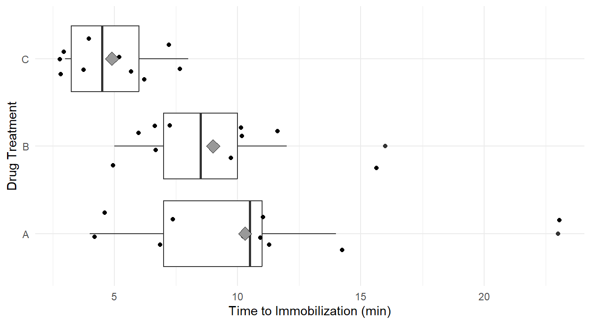
Figure 2.1: Box-whiskers plots, with data overlayed jittered data, and treatement means (gray diamond), showing the distribution of ‘knockdown’ times for each of the three drug treatments, A, B and C. Overall we see immobilization times is highest in treatment A, followed by B and C. We Also note that variability appears greatest in treatment A, followed by B and C.
Visually it appears the immobilization times under drug C seem to be noticeably lower on average than for the other two drugs (Drug C has a mean of 4.9 compared to 10.3 and 9.0 for A and B, respectively). Also, we may suspect the variance of immobilization times is different between the three drugs (the width of the box-plots and the reported standard deviations). That is, the distributions of immobilization times for drugs A and B are more disperse than for drug C.
To perform One-Way ANOVA we employ the aov() function (for Analysis Of Variance).
That’s it! The single line of code above fits the model described in (2.3) with \(k=3\) treatments corresponding to the three Drug types.
2.4.3.1 Coding Notes
The line of code above is fairly straightforward but R has done many things in that single line of code.
The provided formula, Knockdown_times ~ Drug, and data declaration, data=deer_knockdowntimes, provide aov() all the information needed to fit the model.
Later in the class we will see more complex formula statements but they all have the same general form: response ~ predictor.
The function call, aov(), estimates (or fits) the aforementioned linear model and calculates many associated parameters regarding that model.
The fit.drug <- part of the code says to save that model in a new object that we call fit.drug.
Much like the data types discussion in Section 1.3.2, the object fit.drug is a variable in R and has an associated type:
## [1] "aov" "lm"The object fit.drug has two associated classes: the aov type and lm type.
This is because all ANOVA models are technically Linear Models (hence lm), so both object classes are assigned.
Recall the derivation above where we write the response as a function of indicator variables in the form of a linear model, see (2.4).
We also mentioned that the aov() calculates many parameters associated with that model.
The below code is only provided for explanatory purposes (it will never be needed to complete an analysis) but we can see most of the information that is stored in the fit.drug object with the names() function.
## [1] "coefficients" "residuals" "effects" "rank"
## [5] "fitted.values" "assign" "qr" "df.residual"
## [9] "contrasts" "xlevels" "call" "terms"
## [13] "model"The object has 13 components of information stored in it!
Some of these pieces of information are technical parameters that you will never need (e.g, qr), but others are part of a formal analysis and we will use them later.
Although rarely needed for the analysis, it is worth noting that one piece of information is the model coefficients.
Their exploration can be enlightening towards understanding the equation of the ANOVA model (2.4).
## (Intercept) DrugB DrugC
## 10.3 -1.3 -5.4Here the (Intercept) has the value 10.3, which corresponds to the mean immobilization times for Drug A.
The variable DrugB takes on the value -1.3, which is the estimated \(\delta_j\) term from equation (2.4) for treatment B, and note that \(10.3 + (-1.3) = 9.0\) which is the mean immobilization times for Drug B.
Likewise, DrugC is the estimated value of \(\delta_j\) in (2.4) for treatment C and \(10.3 - 5.4 = 4.9\) is the mean immobilization time for Drug C.
Before proceeding with the analysis of the model output, we need to check the assumptions of our underlying model.
2.5 Model Assumptions & Assessment
Arguably the most important aspect in an analysis is the assumptions made with the chosen statistical model. In the field of statistics there are two types of assumptions made:
- Assumptions about the systematic structure.
- Assumptions about the random variation.
Most of the time, when referring to “assumptions” we are concerned about 2: Assumptions about the random variation. However, it is important to consider the assumptions on the structure.
2.5.1 Structural Assumptions
In all of our models/testing discussed above, we are assuming the response variable is a linear function on the predictor variable(s) (consider (2.2) and (2.3), both are linear equations).
This assumption becomes more important later in the course when discussing linear regression.
Here, since the model is looking at factors, or categorical treatments, as the inputs, the linear equation reduces to comparing the mean of each group.
From context, it is important to determine if this structure is appropriate.
2.5.2 Random Variation Assumptions
In this class, along with nearly all methods you learned in your introductory statistics course, we make the following assumptions about the underlying random variation (i.e., stochastic part) of the response variable, \(\varepsilon\):
- The \(\varepsilon_i\) terms are independent.
- The variance of \(\varepsilon_i\) is homogeneous; i.e., \(Var(\epsilon_i)=\sigma^2\) is constant for all \(i=1,\ldots,n\). This is sometimes known as being homoskedastic or having “constant variance”.
- The \(\varepsilon_i\) terms are Normally distributed.
Collectively, the three assumptions simply state \[\varepsilon_i \stackrel{iid}{\sim} N(0, \sigma^2), ~~\textrm{for variance}~\sigma^2\]
Important Note. In the above bullet points, the assumptions are listed in their order of importance. If you lack independence, nearly all statistical methods we cover in this text are invalid. The constant variance assumption is important but in many cases violations of the assumption can be addressed. Lastly, the Normality assumption tends to not be all that important except in small sample sizes and when the data are heavily skewed – but we can also address issues with Normality in many cases.
2.5.2.1 Independence
In general, independence (or lack thereof) is the result of the sampling scheme employed during data collection. If you collect your data according to a well designed experiment or a simple random sampling scheme with one observation per subject, there is usually no reason to suspect you will have a problem. Data collected sequentially in time (e.g., daily high temperatures or repeated measures on the same subject) will exhibit a phenomenon known as autocorrelation (also called serial correlation) and is a major problem! Specialized methods are needed for this type of data. We will briefly cover the idea of repeated measures in Section 4.2, while a general treatment of autocorrelation is excluded from our work.
2.5.2.2 Constant Variance
To assess the constant variance assumption we typically consider two simple plots: the ‘Residuals vs Fitted’ plot and ‘Scale-Location’ plots as seen in Figure 2.2 (code to generate the plot is provided below).
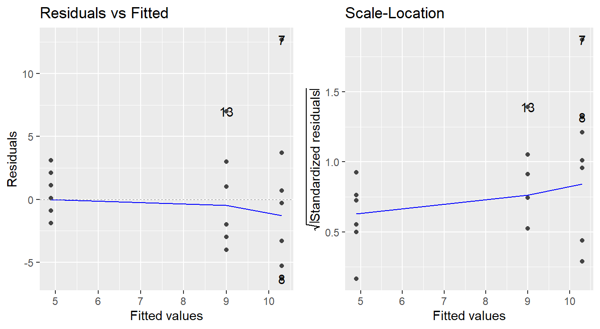
Figure 2.2: Residual diagnostic plots showing a fanning effect in the residuals vs fitted and increasing linear trend in the Scale-Location plot, thus suggesting the variance increases with the mean.
Before reading these plots, we need to answer two questions: What is a residual? and What is a fitted value?
Consider the baseline model (2.1), \(Y = \mu + \varepsilon\). We can estimate \(\mu\) with \(\bar{y}\), then we could predict each unobserved \(Y_i\) with \(\hat{Y}_i=\bar{y}\). From there, we can approximate the random noise of the \(i^\mathrm{th}\) observation \(\varepsilon_i\) with \(e_i = Y_i - \hat{Y}_i = Y_i - \bar{y}\). The values \(\hat{Y}_i\) are known as the fitted, or predicted, values and the \(e_i\) terms are the sample residuals.
In the case of the One-Way ANOVA model (2.3), we would calculate a different mean \(\bar{y}_J\) for each of the \(k\) treatments and each \(Y_{ji}\) would be predicted by the appropriate \(\bar{y}_j\) for \(j=1,\ldots,k\).
The sample residuals would be found by \(e_{ji} = Y_{ji} - \hat{Y}_{ji} = Y_{ji} - \bar{y}_j\).
Also recall that a fitted aov object in R already contains the residuals and fitted values.
How to read these plots?
A residuals versus fitted plot is provided in the left panel of Figure 2.2. If all is well, you should see fairly uniform (“constant”) spread of the points in the vertical direction and the scatter should be symmetric vertically around zero. The vertical spread here looks like it might be expanding as the fitted values increase (look at the dots from left-to-right, we see a ‘fanning’ effect where the vertical spread for fitted values around 5 is more narrow, than the spread at fitted values of 9, and the largest is at the fitted values near 10.5), suggesting that there may be non-constant error variance.
Note: In the case of ANOVA, you will also see stacked dots, or vertical stratification in the Residuals vs Fitted plot. This is an artifact of the fitted values – all observations in the same treatment are predicted with the same value (\(\bar{y}_j\)), so you should expect to see this stratification. Also, when looking at ANOVA, we can generally ignore the plotted trend line (blue line in the left panel above). It will be more useful when assessing linear regression.
An attempt at refining the residuals vs fitted plot is given in the plot on the right in Figure 2.2, called the Scale-Location plot. The difference now is that instead of plotting the raw residuals \(e_{ij}\) on the vertical axis, R first standardizes them (so you can better check for extreme cases), takes their absolute value (to double the resolution in the plot) and then takes their square root (to remove skew that sometimes affects these plots). R then adds a trend line through the points: if the constant variance assumption is reasonable, this trend line should be roughly horizontal. Here, you can see it trending upward, so we likely have a variance that is increasing with the fitted values (i.e., we not have constant variance).
Note: Using the absolute values of the residuals in the Scale-Location plot is often a good refinement. The reason being we typically do not care if a residual is positive or negative: all we are looking for is if the scatter is uniform across the plot. Thus, by looking at the magnitude of the residuals only (and not their direction), we are actually improving the resolution of the information that the plot contains in addressing constant variance. Also, like with the Residuals vs Fitted plot, we will see vertical stratifications since our fitted values are the sample mean within a treatment group.
2.5.2.3 Checking Normality
We typically make this assessment with a Normal quantile-quantile (Q-Q) plot.
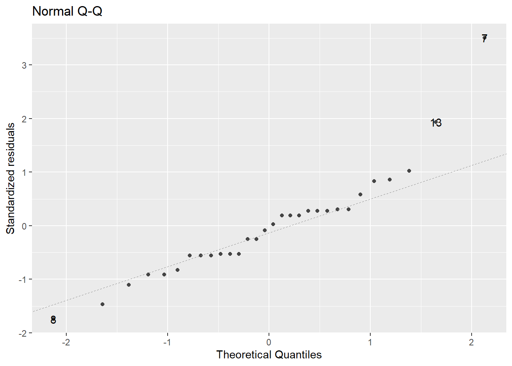
Figure 2.3: Normal Q-Q plot demonstrating the residuals may deviation from the Normality assumption.
In a normal Q-Q plot, the observed sample values (the “sample quantiles”) are plotted against the corresponding quantiles from a reference normal distribution (the “theoretical quantiles”). If the parent population is normally distributed, then the sample values should reasonably match up one-to-one with normal reference quantiles, resulting in a plot of points that line up in a linear “45-degree” fashion.
A normal Q-Q plot of the residuals is presented in Figure 2.3. A common tool to analyze these plots is sometimes known as the “fat pencil” test. Consider the thick pencils children are given when learning to write – lay that pencil on the plotted line, if all the points are covered by the pencil then the data is approximately normally distributed.
In Figure 2.3 there is some deviation from the line (observations 13 and 7). Coupled with the issues with variance outlined above, we may have evidence to suggest the normality assumption is not met.
Note: It is quite common for violations of constant variance and normality to go hand-in-hand. That is, if there are concerns about one, it is likely there will be concerns regarding the other.
2.5.3 Code to check assumptions
The code to generate the above plots can be achieved via the autoplot function when including the ggfortify library (Horikoshi et al., 2019).
The autoplot function on the fitted model provides 4 plots by default as seen in Figure 2.4 (note: we will discuss the Constant Leverage plot in Section 8.6).
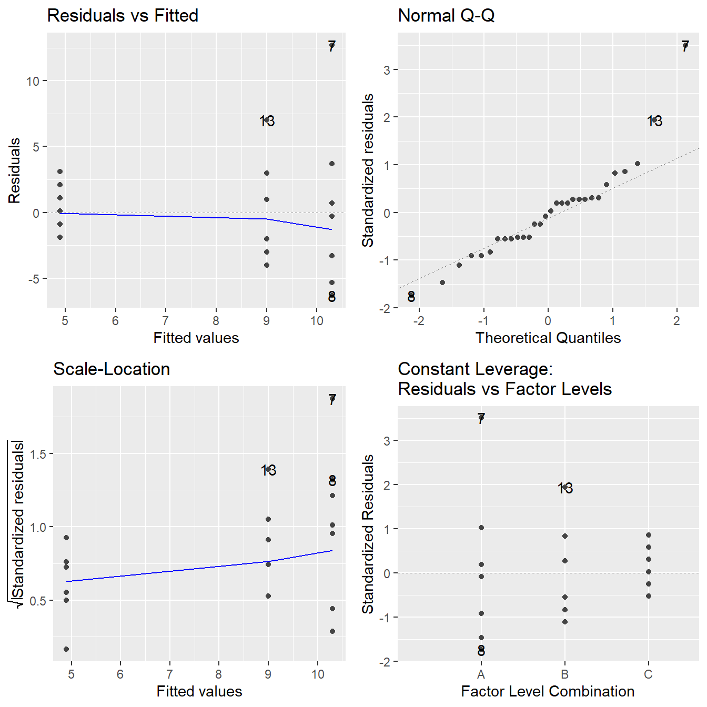
Figure 2.4: Residual plots for the One-Way ANOVA studying the effect of different drugs on immobilization times - Top-left a Residuals vs Fitted Plot; Top-right a Normal Q-Q plot of the residuals; Bottom-left the Scale-Location plot; and Bottom-right a Residuals vs Leverage plot.
2.5.3.1 Coding Notes
You can think of the autoplot() function in ggfortify package as a smart function.
That is, it makes some reasonable decisions for you.
Specifically, you pass in the fitted ANOVA model (in this case fit.drug) and the autoplot() function determines the class of that model (here, the aov or lm type).
Recognizing that model type, autoplot extracts the residuals and fitted values from the model, and generates the 4 plots in Figure 2.4.
With different object types, autoplot() will behave differently.
2.6 Transforming your response
In cases where we have violations of our underlying assumptions, a common remedy is to transform the response variable.
In our working example, we have evidence from the above residual diagnostic plots that the variance appears to be increasing with the response (determined by assessing the constant variance assumption) and that there may be some violations to normality.
One way to address this issue is to transform the response variable.
We will go into more details in a later chapter but common transformations include \(Y^*=log_{10}(Y)\), \(Y^*=\sqrt{Y}\) and \(Y^*=1/Y\).
Here we will use a logarithmic as it is fairly common and more interpretable than most other transformations.
To transform the response variable we use the log10() function.
Math Tangent: Note that the logarithm function is a monotone increasing function. So if \(a>b\) then \(\log(a)>\log(b)\). Thus, if an ANOVA model tells us that the mean of the log-response under the treatments differ, we can reasonably infer that the mean of the treatments differ (in the original units). Also, recall from an algebra course that the base of the logarithm does not affect the overall behavior of the function (you can easily convert from one base to another with the ‘change of base formula’). For this reason, we recommend you use a base-10 logarithm as it is commonly used in most scientific fields and is fairly interpretable (can interpret as orders of magnitude).
The following R code fits the one-way ANOVA model to the logarithm of knockdown times (transformed response) and provides the residuals plots in Figure 2.5.
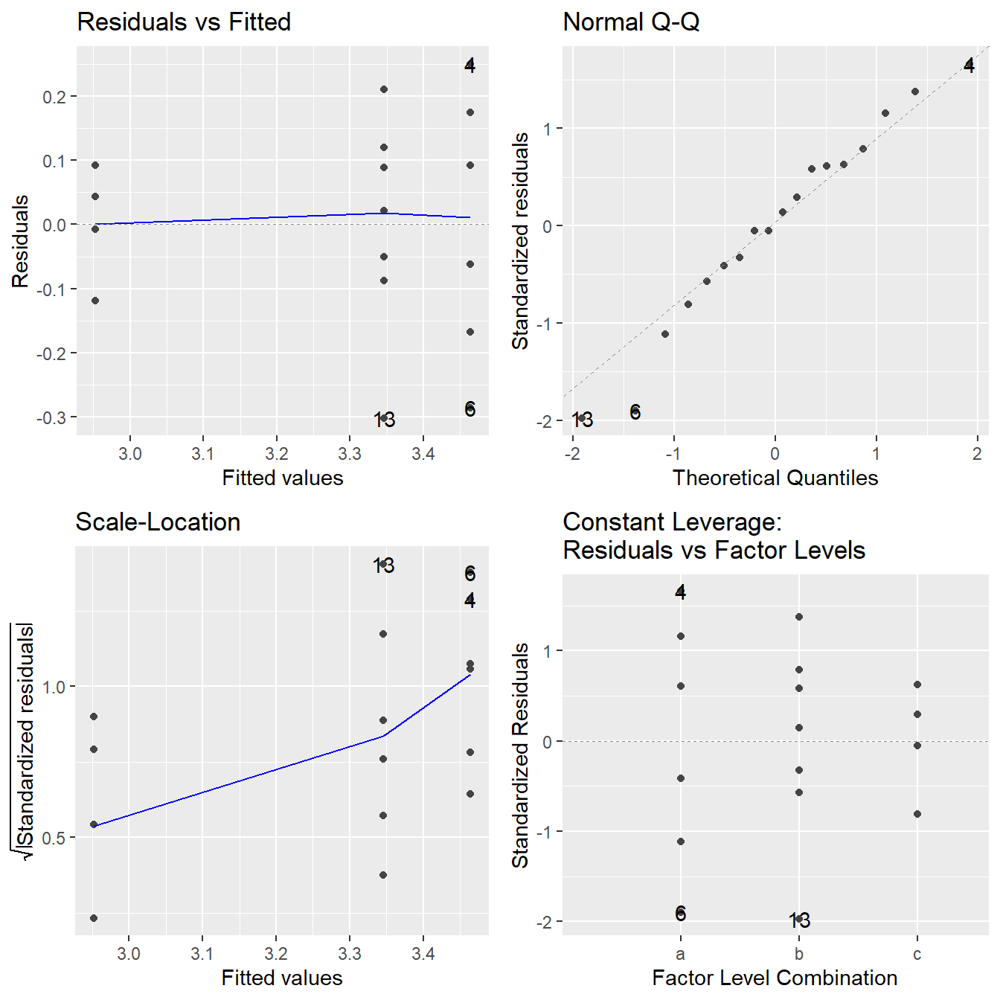
Figure 2.5: Residual diagnostic plots when the response variable is the logarithm of the immobilization time. Here the heteroskedasticity and non-normality in the original model has been improved, albeit not entirely mitigated, with some minor fanning in the residuals vs fitted plot.
Note the improvement in the Normal Q-Q plot – the observed quantiles closely match the theoretical quantiles. The Scale-Location plot shows that the issues with a changing variance have largely been addressed as we see a nearly horizontal line. In the Residuals vs Fitted plot the violation in constant variance has improved although some indication the vertical spread is increasing is still present.
Overall, the logarithmic transformation has improved our model assumptions. We can try other transformations but a perfect transformation is unlikely to exist. When the variance increases with the fitted values, a logarithm on the response tends to useful. Later in the text we will discuss other approaches to transforming the response, but for now we proceed with the logarithmic transformation.
2.6.1 A note on logarithmic transformations
Although logarithms tend to be somewhat easy to interpret, we do need to step through what is happening mathematically to properly interpret the results. Before doing so, recall some properties of logarithms from your Algebra course:
- \(\log_{10}(1) = 0\),
- For an \(x\) such that \(0 < a < 1\), \(\log_{10}(a) < 0\),
- For an \(a>1\), \(\log_{10}(a) > 0\),
- \(\log_{10}(ab) = \log_{10}(a) + \log_{10}(b)\) and \(\log_{10}(a/b) = \log_{10}(a) - \log_10(b)\),
and also recall the following power function properties:
- \(10^0 = 1\),
- For an \(a < 0\), then \(0 < 10^a < 1\),
- For an \(a > 0\), then \(10^a > 1\),
- \(10^{a+b} = 10^a\times 10^b\),
and of course the relationship between power functions and logarithms:
- \(\log_{10}(10^a) = 10^{\log_{10}(b)} = a\).
Now, if you consider equation (2.3) with regard to our working example, \(Y\) is the knockdown time but we fit the ANOVA model on \(\log_{10}(Y)\). So we have fit the following model: \[log_{10}(Y) = \mu_j + \varepsilon\] where each \(\mu_j\) corresponds to the mean of the logarithm of the response in treatment \(j\). Using the indicator variable ideas (see (2.2) for the two-sample \(t\)-test derivation), the model can be expressed as \[\log_{10}(Y_{i}) = \mu_A + \delta_B X_{Bi} + \delta_C X_{Ci} + \varepsilon_{ji}\] where \(\mu_A\) is the mean of the logarithm of knockdown times in group A. \(X_{Bi}\) takes on the value 1 if the \(i^\mathrm{th}\) observation is in group B, otherwise it is zero. Likewise \(X_{Ci}\) for group C. The value \(\delta_B\) measures how the mean of log-knockdown times in group B differs from A, and \(\delta_C\) how group C differs from A.
If we were to “un”-log the above model to the original units by raising each side to the power of 10, we get: \[10^{\log_{10}(Y)} = Y = 10^{\mu_j + \varepsilon} = 10^{\mu_j}\times 10^\varepsilon\] and \[10^{\log_{10}(Y_i)} = Y_i = 10^{\mu_A + \delta_B X_{Bi} + \delta_C X_{Ci} + \varepsilon_{ji}} = 10^{\mu_A} \times 10^{\delta_B X_{Bi}}\times 10^{\delta_C X_{Ci}} \times 10^{\varepsilon_{i}}\] by properties of logarithms and power rules.So technically speaking, in terms of the original units, we have fit a multiplicative model because the effects of each treatment (the \(\delta_j\) terms) are changing the response by multiplicative factors.
Interpretation of the multiplicative model is a bit more nuanced than that of a linear models since we are no longer simply adding or subtracting effects of different treatments.
Consider an observation from group A, \(\mu_A\) is the mean of the base-10 logarithm knockdown times in group A. Now both \(X_{Bi} = X_{Ci} = 0\) since the observation is in group A, and \(10^0 = 1\). The expected value of \(\varepsilon\) is zero, so the three power terms to the right all reduce to one, and the knockdown times are modeled via \(Y_i = 10^{\mu_A}\) where \(\mu_A\) is on a log-scale so we get back to the original units since \(10^{\log_{10}(a)}=a\).
However, suppose the observation is from group B, now \(X_{Bi}=1\) and \(X_{Ci}=0\). The term \(\delta_B\) measures how the mean of the logarithm of knockdown times in group B differ from group A; i.e., \(\delta_B = \mu_B - \mu_A\) where \(\mu_A\) and \(\mu_B\) are the means of the logarithm of knockdown times in groups A and B, respectively. In terms of the original units, the model is \(10^{\mu_A}\times 10^{\delta_B}\), which effectively multiplies the effect of treatment A by \(10^\delta_B\). Now, in this case we can replace \(\delta_B\) with \(\mu_B - \mu_A\) and some algebra results in \(10^{\mu_B}\), and since \(\mu_B\) is the mean of the logarithm knockdown times in group B, we are in the original units.
2.7 ANOVA Testing in R
In the working example above, we fit a initial model, assessed its assumptions, transformed the response variable and fit the model again. Specifically, the following code was used in our model fitting for the deer immobilization times as a function of drug treatments:
# Input data from the course repository
site <- "https://tjfisher19.github.io/introStatModeling/data/deerKnockdown.RData"
load(url(site))
# Fit the model with the original response
fit.drug <- aov(Knockdown_time ~ Drug, data=deer_knockdown_times)
# Check model assumptions
autoplot(fit.drug)
# We determined a transformation is warranted due to issues
# with the constant variance and normality assumption
# Consider a log10 transformation on the response
# and asses the model assumptions
fit.log.drug <- aov(log10(Knockdown_time) ~ Drug, data=deer_knockdown_times)
autoplot(fit.log.drug)
# Model assumptions looked acceptableNow that we have assessed that the model reasonably meets the underlying assumptions, we can proceed and perform the analysis.
The test comparing the three drug population means (on a log scale) is provided via an ANOVA table.
There are actually three different approaches to building this table in R.
The summary() and anova() (excluded here, the result is nearly identical to summary()) commands both provide the table in R output:
## Df Sum Sq Mean Sq F value Pr(>F)
## Drug 2 0.536 0.2679 8.22 0.0016 **
## Residuals 27 0.880 0.0326
## ---
## Signif. codes: 0 '***' 0.001 '**' 0.01 '*' 0.05 '.' 0.1 ' ' 1An alternative approach that is useful when making reports is to use the tidy() function in the broom package (Robinson et al., 2025) (installed along with the tidyverse).
It creates a data.frame with the ANOVA table, then the kable() outputs an aesthetically pleasing table to a report:
library(broom)
drug.anova.df <- tidy(fit.log.drug)
kable(drug.anova.df, digits=3) |>
kable_styling(full_width=FALSE)| term | df | sumsq | meansq | statistic | p.value |
|---|---|---|---|---|---|
| Drug | 2 | 0.536 | 0.268 | 8.219 | 0.002 |
| Residuals | 27 | 0.880 | 0.033 | NA | NA |
2.7.1 Reading an ANOVA table
The ANOVA table includes quite a bit of information. The mathematical derivation and details on these components are not important for our purposes, but we do step through all the components of the ANOVA table:
- Degrees of freedom (df). Here, we see two different degrees of freedom are reported.
- The df corresponding to the term
Drugis the degrees of freedom associated with the different treatments. When there are \(k\) treatments, there will be \(k-1\) degrees of freedom. - The df corresponding to
Residualsare the degrees of freedom associated with the within treatment squared deviations. In the case of a One-way ANOVA, this will take on the value of \(n-k\) where there are \(n\) total observations on \(k\) treatments.
- The df corresponding to the term
- Sum of squared deviations (Sum Sq). These are the \(SSM\) and \(SSE\) terms from equation (2.5).
- Here, 0.5357 is the \(SSM\) and 0.8800 is the \(SSE\), we could calculate the \(SST\) via \(SST = 0.5357 + 0.8800 = 1.4157\).
- Mean squared deviation (Mean Sq) - These are known as the mean squared deviations, and are calculated by dividing the sum of squared deviations by their corresponding degrees of freedom
- Here, \(0.5357/2 = 0.2679\) for the Mean Squared deviations of the model (sometimes labeled \(MSM\)) and \(0.8800/27 = 0.0326\) for the mean squared error (often labeled \(MSE\)).
- The \(F\)-statistic is reported.
- It is calculated as \(MSM/MSE\), so \(0.2679/0.0326 = 8.219\)
- And the corresponding \(p\)-value; i.e., the probability of observing a larger \(F\)-statistic by pure chance alone when the null hypothesis is true.
- Here, the \(p\)-value is \(0.00163\).
Typically, when reporting the results of ANOVA, we report the \(F\)-statistic, the two degrees of freedom, and the corresponding \(p\)-value. Collectively, these four measures provide a reader with information to deduce the sample size, number of treatments and effect of the experiment.
In our working example, we would report using language similar to the following: > With an \(F\)-stat of 8.219 on 2 and 27 degrees of freedom (\(p\)-value = 0.00163), we can conclude that at least two of the drugs produce significantly different mean log-immobilization times.
2.7.2 Conclusions and Limitation of ANOVA
The results of a simple One-Way ANOVA are somewhat limited. The null hypothesis suggest the mean response is the same across all treatments, while the alternative tells us there some difference between mean responses. Unfortunately it provide no details on which treatments differ, or the magnitude of the differences.
Specifically, in regards to the ANOVA testing the logarithm of knockdown times, we found there is a difference among the three drug treatments; essentially ANOVA tells us that the null hypothesis \(H_0:\ \mu_A = \mu_B = \mu_C\) is rejected in favor of an alternative. Of course, what remains to be seen is which pair, or pairs, of drugs produce different log-mean immobilization times and the magnitude of those differences. For that, we will need to look at techniques known as multiple comparison procedures.
2.8 Follow-up procedures – Multiple Comparisons
When there is no significant difference detected among treatment means, we can safely conclude that the treatment had no effect on the mean response. This effectively says that any differences in means were no larger than the type of change we might expect due to random chance. In such a case, the analysis is essentially over, except that we might want to assess the size of the observed treatment differences for descriptive purposes.
However, if significant differences are detected among the treatments (as in the knockdown times example above), the ANOVA \(F\)-test does not inform you where the differences lie. In such a situation, a follow-up procedure known as a multiple comparison procedure is necessary to seek out pairwise mean differences.
There are numerous multiple comparison methods in existence, and they all have certain advantages and disadvantages. Some are designed for specific follow-up comparisons and can be customizable (known as contrasts). Here we will discuss procedures for handling the following scenarios:
- All possible pairwise comparisons.
- All comparisons versus a control group.
So for example, if we had a one-way design with five treatment groups A, B, C, D and E, there would be 10 possible pairwise comparisons:
\[\begin{array}{cccc} A~\textrm{vs.}~B & B~\textrm{vs.}~C & C~\textrm{vs.}~D & D~\textrm{vs.}~E \\ A~\textrm{vs.}~C & B~\textrm{vs.}~D & C~\textrm{vs.}~E & \\ A~\textrm{vs.}~D & B~\textrm{vs.}~E & & \\ A~\textrm{vs.}~E & & & \end{array}\]
whereas if (say) A was a control group and we were only interested in comparisons versus a control group, then there would be only 4 pairwise comparisons of interest:
\[\begin{array}{c} A~\textrm{vs.}~B \\ A~\textrm{vs.}~C \\ A~\textrm{vs.}~D \\ A~\textrm{vs.}~E \\ \end{array}\]
Now, you may say to yourself, “So what is the big deal? I’ll just do 10 two-sample \(t\)-test!”
Well, if you find yourself in a multiple comparison situation, it is because you have declared that at least two groups differ based on the result of a single hypothesis test (the \(F\)-test). For that test, you used a specific criterion to make the decision (probably \(p\)-value < 0.05). You performed the analysis with an accepted false positive rate, known as the Type I error rate, or \(\alpha\) (again, likely \(\alpha=0.05\)).
But to tease out where the differences are, you now need to run multiple tests under the same “umbrella” or model. That gives rise to something known as the multiple testing problem. The problem is an increase in the false positive rate (the Type I error rate) that occurs when statistical tests are used repeatedly.
2.8.1 Multiple testing problem
If \(m\) independent comparisons are made, each using a Type I error rate of \(\alpha\), then the family-wise (overall) Type I error rate (FWER) for all comparisons considered simultaneously is given by \[\alpha_{FWER} = 1 - (1 - \alpha)^m.\]
Illustration: Coin flips.
Suppose that we declare that a coin is biased if in 10 flips it landed heads at least 9 times. Indeed, if one assumes as a null hypothesis that the coin is fair, then it can be shown that the probability that a fair coin would come up heads at least 9 out of 10 times is 0.0107. This is relatively unlikely, and under usual statistical criteria such as “reject \(H_0\) if \(p\)-value < 0.05”, one would declare that the null hypothesis should be rejected given this probability — i.e., declare the coin is unfair.
A multiple testing problem arises if someone wanted to use this criteria (which is appropriate for testing the fairness of a single coin) to test the fairness of many coins. So, imagine you were to test 100 different coins using this method. For any particular coin (i.e., some pre-selected coin), we would expect the likelihood of it flipping heads 9 or 10 times to be relatively small (in fact, it would be with probability 0.0107). However, seeing some coin (as in any of the 100 coins) behave that way, without concern for which coin, is more likely. In fact, the probability that all 100 fair coins are identified as fair by this criterion is \((1 - 0.0107)^{100} \approx 0.34\). This suggest, even if all 100 coins were in fact fair, the probably some coin is incorrectly flagged as unfair is approximately 66%. Therefore the application of a “single coin fairness criterion” to multiple comparisons would more likely than not falsely identify at least one fair coin as unfair!
The above illustration may seem contrived, but multiple testing is a reality and a natural follow-up procedure to ANOVA. If you conducted two hypothesis tests, each at \(\alpha=0.05\), the family-wise error rate is 0.0975. For three tests (e.g., A vs B, A vs C and B vs C), the overall Type I error rate is 0.142625.
To address the problem, many multiple comparison procedures have been developed that help control the accumulation of the false positive rate. Some methods perform better than others, but common to all of them is making adjustments to \(p\)-values or CIs based upon how many comparisons are being made.
One common approach is known as the Bonferroni method, which simply adjusts the significance level (\(\alpha\)) based on the number of test or confidence intervals being calculated. So for example, if you were making 6 comparisons and you wished to have a family-wide error rate of \(\alpha_{FWER}=0.05\), perform each of the comparisons at \(\alpha = 0.05/6 = 0.00833\). This method is known as being conservative since it guarantees a family-wide error rate less than nominal level (note, \(1 - (1-0.008333)^6 = 0.04897 < 0.05\)).
Multiple comparisons in an ANOVA framework can be performed using the add-on R package emmeans (Lenth, 2019).
The package emmeans is quite powerful. We only demonstrate a few pieces of its functionality here.
For those interested in a more in depth look, we suggest checking out the emmeans website.
We will focus on two useful multicomparison methods: Tukey’s HSD and Dunnett’s.
2.8.2 Tukey’s HSD method
One of the more widely used methods is attributed to statistician John Tukey (creator of the Box-Whiskers plot and credited with creating the word “bit”). It is referred to as Tukey’s Honestly Significant Difference method (honestly!). Essentially, it performs all pairwise two-sample \(t\)-test on all the treatments but has the advantage of controlling the Type I error rate. It adjust the \(p\)-values of each two-sample \(t\)-test to account for the fact you are performing more than one test. This is similar to the Bonferroni method, but Tukey’s HSD is known to perform better.
First we load the emmeans package and then run our fitted model fit.log.drug through the emmeans() function. We provide it a formula to inform how we wish to perform the comparisons. In this case the formula is simple since we only have a single factor input ~ Drug. Lastly, to do a “pairwise” comparison we use the contrast() function and tell it the type of comparison to implement.
## contrast estimate SE df t.ratio p.value
## A - B 0.0328 0.0807 27 0.406 0.9136
## A - C 0.2984 0.0807 27 3.696 0.0027
## B - C 0.2657 0.0807 27 3.291 0.0076
##
## Results are given on the log10 (not the response) scale.
## P value adjustment: tukey method for comparing a family of 3 estimatesThe significant differences are what we expected based on our earlier EDA: drug C is significantly different in terms of log-mean immobilization time as compared to the other two drugs. This is determined from the Tukey-adjusted \(p\)-values of 0.0027 (when comparing drugs A and C) and 0.0076 (when comparing drugs B and C). B and A are not significantly different (\(p\)-value of 0.9136). The \(p\)-values in this output have been adjusted for performing 3 comparisons, so we can just compare them to the usual \(\alpha=0.05\) or whatever Type I error rate you use.
We can also obtain simultaneous 95% confidence intervals for the true mean differences due to each drug pairing using the confint() function on our contrast of an emmeans object:
## contrast estimate SE df lower.CL upper.CL
## A - B 0.0328 0.0807 27 -0.1674 0.233
## A - C 0.2984 0.0807 27 0.0983 0.499
## B - C 0.2657 0.0807 27 0.0655 0.466
##
## Results are given on the log10 (not the response) scale.
## Confidence level used: 0.95
## Conf-level adjustment: tukey method for comparing a family of 3 estimatesThese may be interpreted as follows:
95% CI for \(\mu_A - \mu_B\) = (-0.167, 0.233). This interval contains 0, so we cannot conclude that the true log-mean immobilization time significantly differ between drugs A and B.
95% CI for \(\mu_A - \mu_C\) = (0.0983, 0.499). We can be 95% confident that drug A produces a true log-mean immobilization time that is between 0.0983 to 0.499 higher than drug C.
95% CI for \(\mu_B - \mu_C\) = (0.066, 0.466). We can be 95% confident that drug B produces a true log-mean immobilization time that is between 0.066 and 0.466 higher than drug C.
We can also visualize these results via a plot:
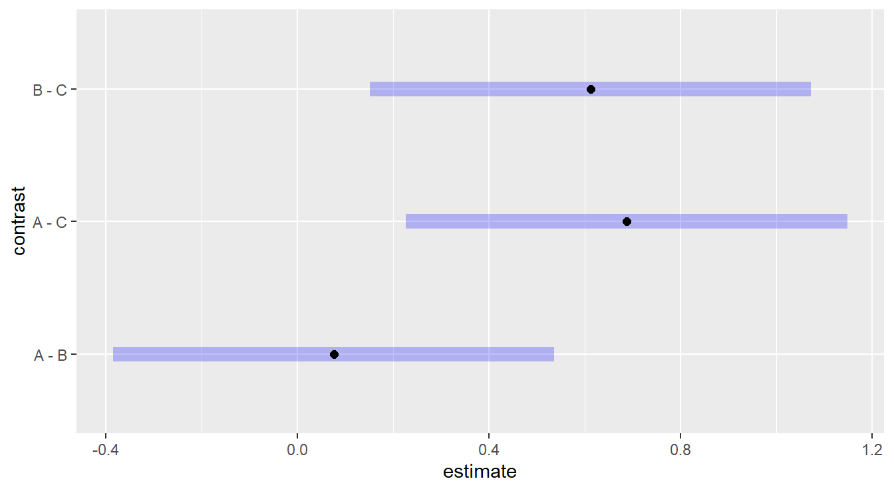
Figure 2.6: Tukey adjusted confidence interval plots comparing treatments A, B and C on a log-scale. Here, we see that treatments B and C are significantly different as well as treatments A and C. We also note there is no significant difference between treatments A and B since the inverval includes zero.
Here, we are interesting in comparing each plotted confident band to the value of 0. If zero is included in the interval, there is no statistical difference between those two treatments. If the interval does not include zero, we can conclude there is a statistical difference.
2.8.2.1 “Un”-transforming the response
You should note in some of the above output that emmeans provides a message that the “Results are given on the log10 (not the response) scale.” To put back in the original units we could “un”-log the intervals by taking base-10 exponents (that is, raise 10 to the power of the value). But we need to take a moment to consider how to interpret the output.
To explain, suppose we are interested in comparing groups A vs B. Without a transformation, the Tukey HSD method effectively calculates the difference \(\mu_A - \mu_B\) and this would lend itself to the two-sample \(t\)-test. But when the response has been transformed with a logarithm, the two mean components are on a logarithmic scale and we would essentially be calculating the difference \(\log_{10}(\mu_A) - \log_{10}(\mu_B)\), which by properties of logarithms is equivalent to \(\log_{10}(\mu_A/\mu_B)\), or the logarithm of the ratio of the two mean values! Thus if we “un”-log that difference, we are left with \(10^{\log_{10}(\mu_A/\mu_B)} = \mu_A/\mu_B\) and we are comparing the ratio of the mean of group A to mean of group B. If the mean of the two groups were equal, we’d expect this ratio to take on a value near one. If the means differ, the ratio would be different than one.
The emmeans provides the functionality to put the response in the original units when a logarithmic transformation has been used. We specify the type="response" parameter in the contrast() function call as follows:
## contrast ratio SE df null t.ratio p.value
## A / B 1.08 0.200 27 1 0.406 0.9136
## A / C 1.99 0.370 27 1 3.696 0.0027
## B / C 1.84 0.343 27 1 3.291 0.0076
##
## P value adjustment: tukey method for comparing a family of 3 estimates
## Tests are performed on the log10 scaleYou’ll note that the null value is 1, and the results are consistent with the previous results – a difference exist between group C and groups A and B. We can also consider confidence intervals
## contrast ratio SE df lower.CL upper.CL
## A / B 1.08 0.200 27 0.68 1.71
## A / C 1.99 0.370 27 1.25 3.15
## B / C 1.84 0.343 27 1.16 2.92
##
## Confidence level used: 0.95
## Conf-level adjustment: tukey method for comparing a family of 3 estimates
## Intervals are back-transformed from the log10 scaleand these intervals can also be visualized
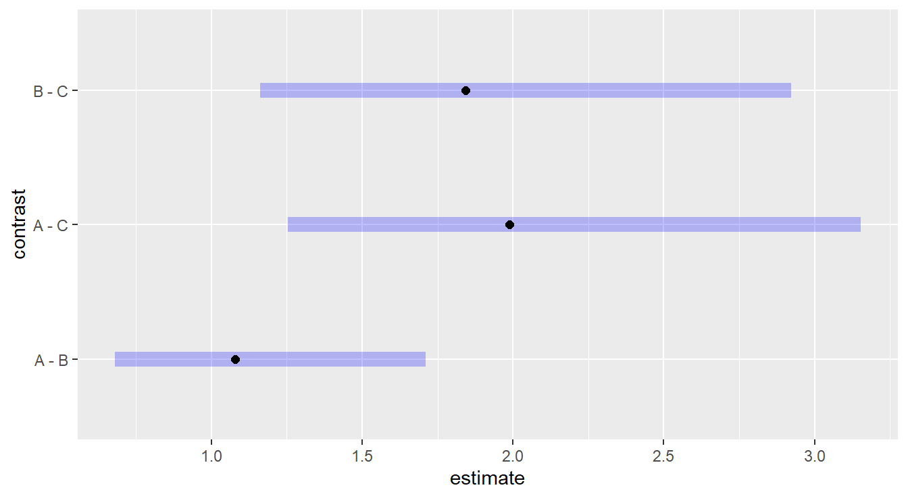
Figure 2.7: Tukey adjusted confidence interval plots comparing the ratio of treatments A, B and C since the original model was fit on a log-scale. Here, we see that treatments B and C are significantly different as well as treatments A and C. We also note there is no significant difference between treatments A and B as the interval includes unity.
2.8.3 Dunnett multiple comparisons
The Dunnett method is applicable when one of your experimental groups serves as a natural control to which you want to compare the remaining groups.
Note that there is no control group in our working example of immobilization times, but we include the code below for demonstration purposes where treatment level “A” is the reference (ref) control group.
In situations were a control group is present, it is advisable to use a method that only controls the family-wise error rate for the comparisons of interest, rather than over-controlling for all possible comparison such as when using a method like Tukey HSD.
We still use the emmeans package but specify the comparisons are against a control group. The code is below:
## contrast estimate SE df t.ratio p.value
## B - A -0.0328 0.0807 27 -0.406 0.8750
## C - A -0.2984 0.0807 27 -3.696 0.0019
##
## Results are given on the log10 (not the response) scale.
## P value adjustment: dunnettx method for 2 testsThe two comparisons provided are A vs. B and A vs. C. The only significant difference is between A and C (\(p\)-value = 0.0019). As before, here are simultaneous CIs and plots:
## contrast estimate SE df lower.CL upper.CL
## B - A -0.0328 0.0807 27 -0.222 0.157
## C - A -0.2984 0.0807 27 -0.488 -0.109
##
## Results are given on the log10 (not the response) scale.
## Confidence level used: 0.95
## Conf-level adjustment: dunnettx method for 2 estimates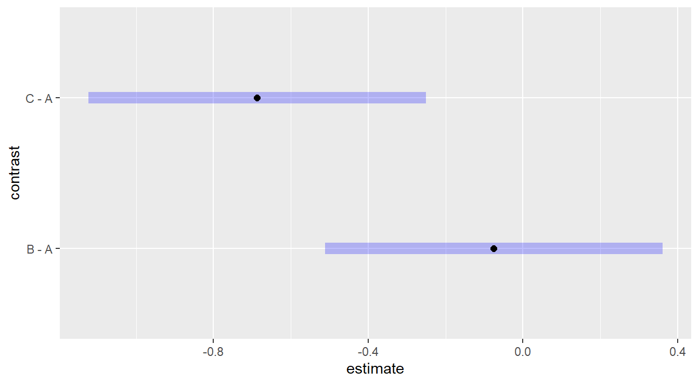
Figure 2.8: Dunnett adjusted confidence interval plots demonstrating that treatment C is significantly different than control group A, while treatment B is not significantly different than control group A.
It is interesting to compare the results you get via the two methods (Tukey vs Dunnett) for the same comparisons (e.g., A vs. C). Can you explain what you see?
Note. If you do not specify a ref= in the contrast() function, group A will automatically be chosen as the reference group for Dunnett (the default behavior is to choose the first factor level [in this case the first alphabetically]).
We recommend you always explicitly tell the code the reference groups. In the below example we set the second (2) factor, B, to be the control with ref="B".
## contrast estimate SE df t.ratio p.value
## A - B 0.0328 0.0807 27 0.406 0.8750
## C - B -0.2657 0.0807 27 -3.291 0.0054
##
## Results are given on the log10 (not the response) scale.
## P value adjustment: dunnettx method for 2 testsAlternatively we can pass in a numeric reference (based on factor order)
2.8.4 Coding notes about emmeans
As we mentioned above, the emmeans package [R-emmeans] includes more functionality than covered in this text.
We do highlight two additional features from the emmeans package that may be useful.
For one, you can build adjusted confidence intervals for each of the three treatments. That is, rather than building a standard 95% confidence interval for each treatment (see Section @ref(#twoSampleInference)), the interval length can be adjusted since multiple comparisons are being made.
Below we build Bonferroni adjusted 95% confidence intervals for mean immobilization times of each treatment, after backtransforming from the logarithm.
## Drug response SE df lower.CL upper.CL
## A 9.17 1.210 27 6.56 12.82
## B 8.50 1.120 27 6.08 11.89
## C 4.61 0.606 27 3.30 6.45
##
## Confidence level used: 0.95
## Conf-level adjustment: bonferroni method for 3 estimates
## Intervals are back-transformed from the log10 scaleWe can also provide a plot of these intervals as seen in Figure 2.9.
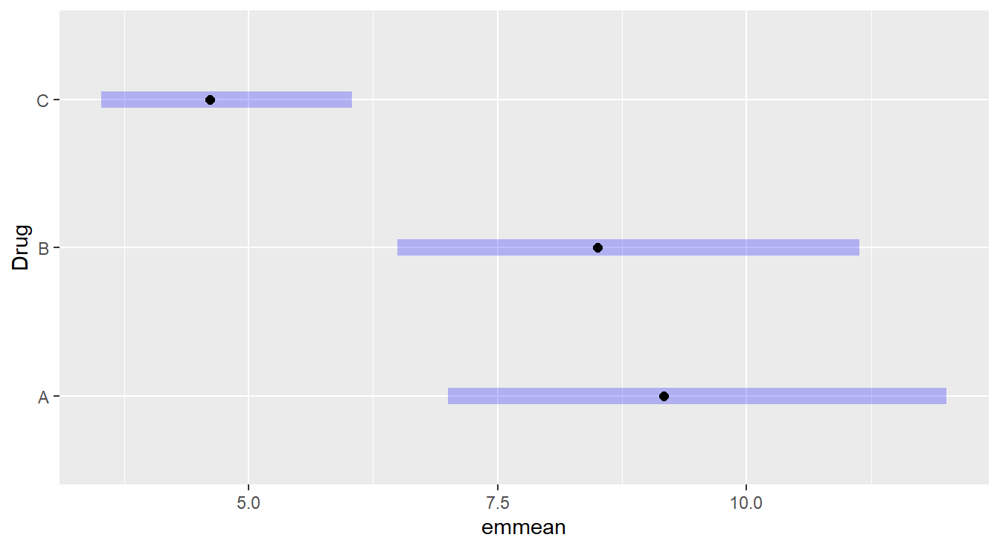
Figure 2.9: Bonferroni adjusted confidence intervals for the immobilization time of the three drug treatments.
Another feature that can be useful with emmeans functionality is the tidy() function from the broom package.
However, we do recommend you use this function with some caution as it does not always work well and you can lose information.
But, when it does work, the output is put into a data frame and can be processed with the kable() function for aesthestically pleasing tables.
An example is provided below that uses the tidy() function, along with select() from dplyr, with kable() and kable_styling().
tidy(drug.mc, conf.int=TRUE, type="response", adjust="bonferroni")|>
select(Drug, response, std.error, conf.low, conf.high) |>
kable(digits=3) |>
kable_styling(full_width=FALSE)| Drug | response | std.error | conf.low | conf.high |
|---|---|---|---|---|
| A | 9.169 | 1.205 | 6.556 | 12.825 |
| B | 8.503 | 1.118 | 6.079 | 11.893 |
| C | 4.612 | 0.606 | 3.297 | 6.451 |
2.9 Two-sample \(t\)-test as ANOVA
One-Way ANOVA was described as an extension of the two-sample \(t\)-test. It is worth noting that when you only have two treatments (\(k=2\)), One-Way ANOVA and the two-sample \(t\)-test are equivalent. Consider the University Admissions dataset once again. For completeness, we include the code that inputs the data and filters the two years of study, 1996 and 2000.
uadata <- read_table("https://tjfisher19.github.io/introStatModeling/data/univadmissions.txt")
uadata.trim <- uadata |>
filter(year %in% c(1996, 2000) )We start with a plot to compare ACT scores across the two years of study.
ggplot(uadata.trim, aes(x=act, y=year)) +
geom_boxplot() +
stat_summary(geom="point", shape=23, fun="mean", size=3, fill="gray60") +
labs(x="ACT Scores", y="Enrollment Year",
title="ACT Scores as a function of Enrollment Year") +
theme_minimal()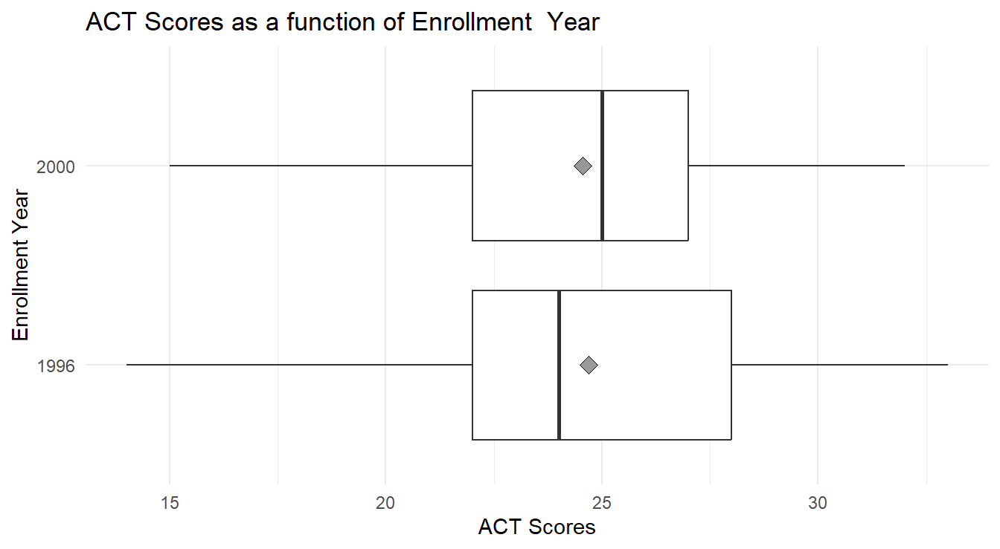
Figure 2.10: Box-whiskers plots, with overlayed means (gray diamond), showing the distribution of ACT scores for each of two university enrollment years, 1996 and 2000. Overall we see little difference in ACT scores between the two years.
In Figure 2.10, we see little-to-no difference in the mean ACT scores between 1996 and 2000. We can statistically test this via a One-Way ANOVA
Although we didn’t perform a residual analysis for the two-sample \(t\)-test, it makes the same assumptions as ANOVA – the underlying random part of the data should be independent, have constant variance and be normally distributed. We assess these assumptions via the residual plots described above.
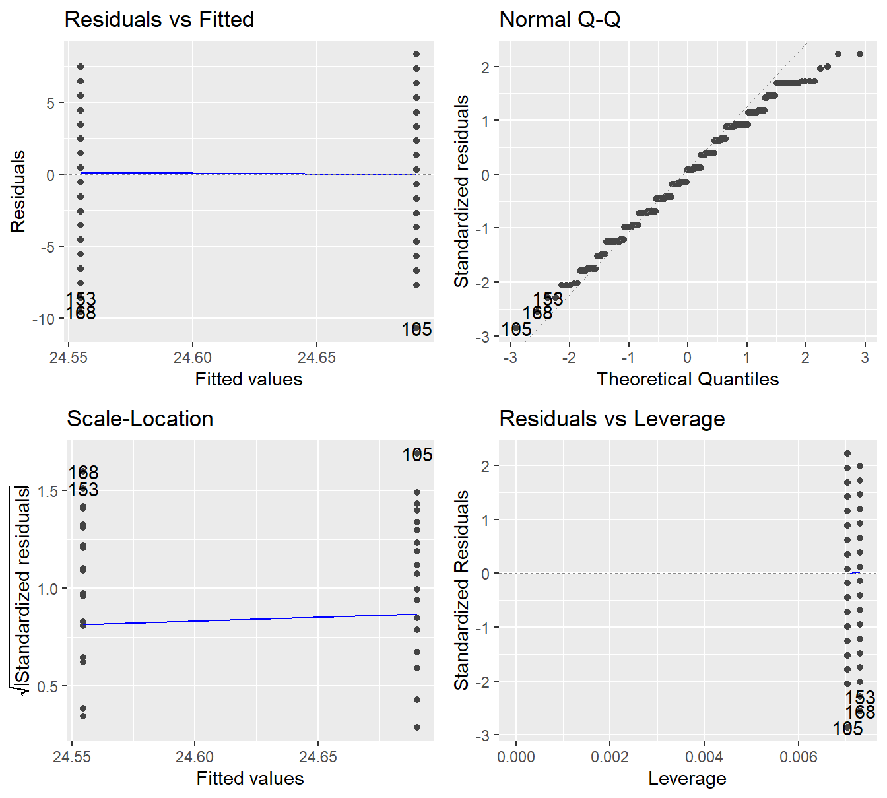
Figure 2.11: Residual plots for the One-Way ANOVA studying the effect of enrollment year on ACT scores - Top-left a Residuals vs Fitted Plot; Top-right a Normal Q-Q plot of the residuals; Bottom-left the Scale-Location plot; and Bottom-right a Residuals vs Leverage plot.
We get independence among the observations based on the data collection procedure. Here, it seems reasonable that each student will be independent of one another. We see no concerns regarding constant variance based on the Residuals vs Fitted plot and Scale-Location plot – the verical spread appears to be about the same across the two groups. The Normal Q-Q plot also looks satisfactory with most points near that 45-degree line.
We proceed with a formal inference.
## Df Sum Sq Mean Sq F value Pr(>F)
## year 1 1 1.28 0.09 0.76
## Residuals 277 3900 14.08With an \(F\)-stat of 0.091 on 1 and 277 degrees of freedom (\(p\)-value=0.763), we do not have evidence to suggest that the mean ACT scores differed in 1996 than 2000.
Note, this is the same conclusion as with the two-sample \(t\)-test. In fact, we get the exact same \(p\)-value using both methods:
##
## Two Sample t-test
##
## data: act by year
## t = 0.3013, df = 277, p-value = 0.763
## alternative hypothesis: true difference in means between group 1996 and group 2000 is not equal to 0
## 95 percent confidence interval:
## -0.749213 1.020005
## sample estimates:
## mean in group 1996 mean in group 2000
## 24.6901 24.5547Further, note that \(t_0^2 = 0.301^2 = 0.091 = F\) and \(\sqrt{F} = \sqrt{0.091} = 0.301 = t_0\) after rounding! The two-sample \(t\)-test and One-way ANOVa with \(k=2\) are equivalent tests.
Follow-up multiple comparisons are not necessary here, for two reasons:
- We found that the different treatments do not significantly influence the response variable. So any multiple comparisons would simply repeat that same finding (no difference in treatments).
- We only have two treatments in this example. If we were to perform a follow-up procedure it would be the same two-sample \(t\)-test as above, and that is already equivalent to the One-way ANOVA analysis.
2.10 A Complete One-Way ANOVA Example
We conclude this chapter by looking at another example of a One-Way ANOVA. Here, the analysis has been somewhat streamlined as we are not introducing new techniques or modeling. We do take some time to incorporate some additional code.
Example: Growth Behavior of Spruce Tress (from the text Devore (2011)).
A study was conducted looking at the bud strength of spruce seedlings under different conditions. Seeds that were deemed healthy and diseased were exposed to a solution of two different pH levels for two days, an acidic solution (pH of 5.5) and a neutral solution (pH of 7). Buds from the seedlings were then analyzed and a Bud Breaking Rating was recorded for each seedling (where a higher number indicates better budding). In the experiment, healthy seedlings exposed to a neutral solutions were considered a control compared to the other treatments. The control group is recorded with a 0 (zero), diseased seeds with the neutral buffer are allocated to group 1, healthy seeds with the acidic buffer are group 2, and diseased seeds with the acid buffer are group 3.
The data are in the file spruceTrees1way.csv in the textbook repository.
Data Source: Stehman et al. (1995)
We begin by inputting the data and looking at it’s structure.
site <- "https://tjfisher19.github.io/introStatModeling/data/spruceTrees1way.csv"
spruce_trees <- read_csv(site, show_col_types=FALSE)
glimpse(spruce_trees)## Rows: 20
## Columns: 2
## $ BudBreaking <dbl> 0.8, 0.6, 0.8, 1.0, 0.8, 1.0, 1.0, 1.2, 1.4, 1.2, 1.0, 1.2…
## $ Treatment <dbl> 3, 3, 3, 3, 3, 1, 1, 1, 1, 1, 2, 2, 2, 2, 2, 0, 0, 0, 0, 0Note that the different treatments have been recorded as a number.
As discussed in the previous chapter, it is important for variables to be of the correct type for many functions in R.
Specifically, if the aov() function sees a numeric predictor variable, the analysis will be different than if categorical.
So the first step will be to convert the numeric Treatment variable into a factor variable.
## Rows: 20
## Columns: 2
## $ BudBreaking <dbl> 0.8, 0.6, 0.8, 1.0, 0.8, 1.0, 1.0, 1.2, 1.4, 1.2, 1.0, 1.2…
## $ Treatment <fct> 3, 3, 3, 3, 3, 1, 1, 1, 1, 1, 2, 2, 2, 2, 2, 0, 0, 0, 0, 0Now that the variable types are correct, we proceed with a short exploratory data analysis. Note that there are only 5 observations in each treatment, thus Box-Whiskers plots do not make much sense here (why summarize 5 observations with 5 ‘summary statistics’?). We build a short table and plot of the data with a mean added to the plot. To provide more meaning to our results, we create some copies of our factor variable and add contextual labels.
spruce_trees <- spruce_trees |>
mutate(Trt_label = factor(Treatment,
levels=c(0, 1, 2, 3),
labels=c("Control",
"Neutral & Diseased Seed",
"Acid & Healthy Seed",
"Acid & Diseased Seed") ),
Trt_label_plot = factor(Treatment,
levels=c(0, 1, 2, 3),
labels=c("Control\n(Neutral & Healthy Seed)",
"Neutral & Diseased Seed",
"Acid & Healthy Seed",
"Acid & Diseased Seed") ))Using some of the tools from before, we look at a table of summary statistics by treatment
spruce_trees |>
group_by(Trt_label) |>
summarize(Mean = mean(BudBreaking),
SD = sd(BudBreaking) ) |>
kable(col.names = c("Treatment", "Mean", "SD"),
digits=3) |>
kable_styling(full_width=FALSE)| Treatment | Mean | SD |
|---|---|---|
| Control | 1.28 | 0.110 |
| Neutral & Diseased Seed | 1.16 | 0.167 |
| Acid & Healthy Seed | 1.24 | 0.167 |
| Acid & Diseased Seed | 0.80 | 0.141 |
and a plot of our data in Figure 2.12.
ggplot(spruce_trees, aes(x=BudBreaking, y=Trt_label_plot)) +
geom_jitter(height=0) +
stat_summary(geom="point", shape=23, fun="mean", size=3, fill="gray60") +
theme_minimal() +
labs(y="", # no label is needed here, its implied
x="Bud Breaking Rating")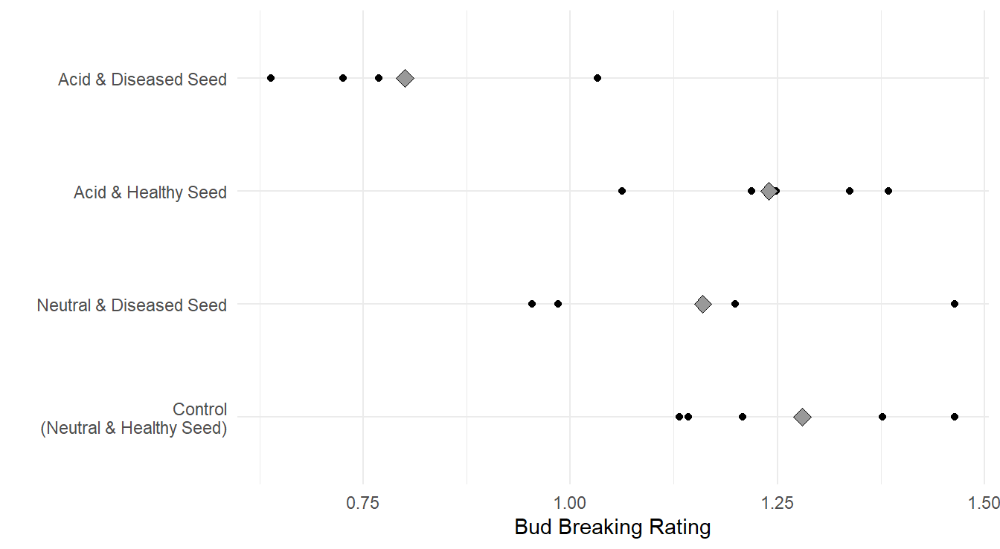
Figure 2.12: Jittered plot of the data, with overlayed treatement means (gray diamond), showing the distribution of Bud Breaking Ratings as a function of acid treatments on seedling health. Overall we see that diseased seeds treated in an acid solution appear to have lower Bud Breaking Ratings
Based on the summary statistic values and plot in Figure 2.12, it appears the Bud Breaking Rating for diseased seeds in the acid solution result in a lower Bud Breaking Rating. It is unclear if other two treatments (Neutral & Diseased seeds, and Acid with healthy seeds) differ from the control.
We fit our ANOVA model
and before conducting any inference we consider the assumptions by analyzing Figure 2.13.
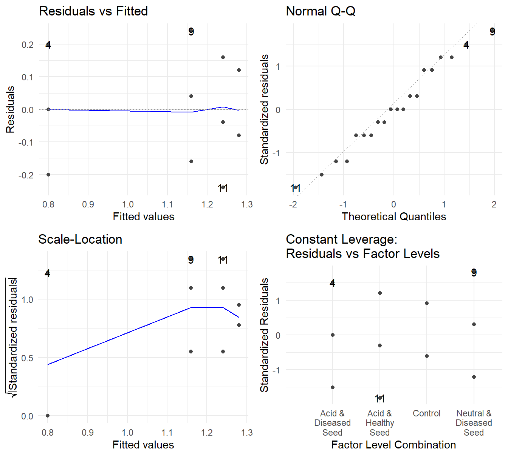
Figure 2.13: Residual plots for the One-Way ANOVA studying the four treatments on the Bud Breaking Rating of Spruce seedlings - Top-left a Residuals vs Fitted Plot; Top-right a Normal Q-Q plot of the residuals; Bottom-left the Scale-Location plot; and Bottom-right a Residuals vs Leverage plot.
- Independence can be assumed from the design of the experiment. Each Spruce tree seed should be reasonably independent.
- Constant Variance – The Residuals vs Fitted plot shows no systematic changing of the variance (the vertical spread of the points looks fairly uniform or random). The Scale-Location shows some evidence of an increase in variability, but coupled with the Residuals vs Fitted plot, there is nothing overly concerning.
- Normality – the Normal Q-Q plot shows the observed quantiles from the residuals largely follows that the of the theoretical values. Thus Normality looks okay.
Overall, the model assumptions appear satisfactory, so we proceed with a formal inference.
## Df Sum Sq Mean Sq F value Pr(>F)
## Trt_label 3 0.720 0.240 10.9 0.00038 ***
## Residuals 16 0.352 0.022
## ---
## Signif. codes: 0 '***' 0.001 '**' 0.01 '*' 0.05 '.' 0.1 ' ' 1With an \(F\)-stat of 10.9 on 3 and 16 degrees of freedom (\(p\)-value=0.00038), we have evidence to suggest that the mean Bud Breaking Rating of spruce seelings varies by treatment.
As a follow-up, we conduct a multiple comparison analysis. We have a “control” in this experiment, thus use the Dunnett procedure.
## contrast estimate SE df t.ratio p.value
## Neutral & Diseased Seed - Control -0.12 0.0938 16 -1.279 0.4589
## Acid & Healthy Seed - Control -0.04 0.0938 16 -0.426 0.9254
## Acid & Diseased Seed - Control -0.48 0.0938 16 -5.117 0.0003
##
## P value adjustment: dunnettx method for 3 testsNot too surprising given the results of Figure 2.12, the “Neutral & Diseased Seeds” and “Acid & Healthy Seed” Bud Breaking Ratings do not statistically differ from the control (\(p\)-values of 0.4589 and 0.9254, respectively). However, we have evidence that the diseased seeds that underwent an acid solution before planting do result in a different Bud Breaking Rating (\(p\)-value of 0.0003). We can also look at confidence intervals to get a sense of the effect size.
## contrast estimate SE df lower.CL upper.CL
## Neutral & Diseased Seed - Control -0.12 0.0938 16 -0.365 0.125
## Acid & Healthy Seed - Control -0.04 0.0938 16 -0.285 0.205
## Acid & Diseased Seed - Control -0.48 0.0938 16 -0.725 -0.235
##
## Confidence level used: 0.95
## Conf-level adjustment: dunnettx method for 3 estimatesand the confidence intervals can be plotted as well.
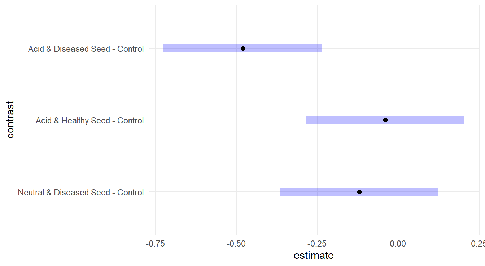
Figure 2.14: Dunnett adjusted confidence interval plots comparing the three treatments to the control group. Here, we see that the Diseased seeds with acid solution group is significantly different than the control, while the other two groups are not significantly different.
From Figure 2.14 and the report confidence intervals, the acid & diseased seeds result in reduction of approximately 0.235 to 0.725 on the Bud Breaking Rating. Also note that the other two intervals include zero, which is consistent with not being significantly different.
Overall Conclusions
Based on the analysis, we can conclude that a compared to a Control group of Healthy Seeds that underwent a Neutral Solution before planting, that Diseased Seeds that underwent an Acid solution before planting will result in a Bud Breaking Strength of 0.235 to 0.725 units less than that of a control group.